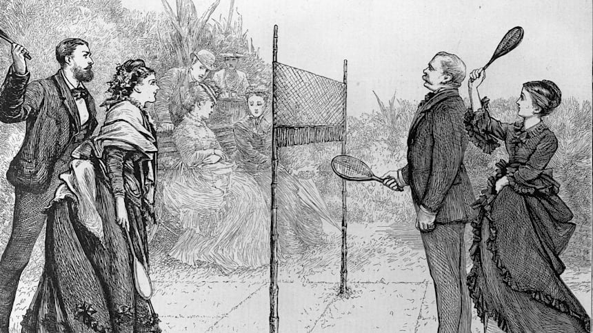

Games employing shuttlecocks have been played for centuries across Eurasia, but the modern game of badminton developed in the mid-19th century among the expatriate officers of British India as a variant of the earlier game of battledore and shuttlecock. ("Battledore" was an older term for "racquet".) Its exact origin remains obscure. The name derives from the Duke of Beaufort's Badminton House in Gloucestershire, but why or when remains unclear. As early as 1860, a London toy dealer named Isaac Spratt published a booklet entitled Badminton Battledore – A New Game, but no copy is known to have survived. An 1863 article in The Cornhill Magazine describes badminton as "battledore and shuttlecock played with sides, across a string suspended some five feet from the ground"
The game originally developed in India among the British expatriates, where it was very popular by the 1870s. Ball badminton, a form of the game played with a wool ball instead of a shuttlecock, was being played in Thanjavur as early as the 1850s and was at first played interchangeably with badminton by the British, the woollen ball being preferred in windy or wet weather.
In 1873, the Duke introduced the game to his guests at a lawn-party held at his estate in Gloucestershire. The Duke called it 'the Badminton game' after the name of his estate – the Badminton House. The name stuck, and thus sport became badminton
Badminton made its debut as a demonstration sport at the 1972 Olympic Games in Munich. It was not until the 1992 Games in Barcelona that it was officially included on the Olympic programme, with men’s and women’s singles and doubles events. The mixed doubles event made its debut in 1996 at the Atlanta Olympic Games. Since then, the number of events has remained unchanged.
Badminton, in recent years, has seen an unprecedented rise in popularity in India, primarily sparked by the
emergence of global superstars like Saina Nehwal, PV Sindhu, Kidambi Srikanth and others.
The exact origins of badminton, till date, remain obscure but there have been references of games involving shuttlecocks
and rackets in historic records of ancient India, China and Greece. The mentions dated back almost 2000 years.
In medieval Europe, a children’s game called battledore and shuttlecock, in which players used a paddle (battledore) to keep a
small-feathered shuttlecock in the air as long as possible, was also popular. Jeu de Volant was another similar game played by European
aristocrats in the 17th century.
The transformation of the past-time racket sport to becoming a globally-recognised sporting discipline, however, started from India.
British army officers got introduced to the indigenous version of the game, played for centuries, while stationed in India around the 1860s.
They made their own adaptations to the sport, primarily adding the net and called it Poona or Poonah, after the town (Pune) the garrison
was based in. The first informal set of badminton rules for the game were formed in India by the British colonists in 1867.
Interestingly, ball badminton – another variation of the game involving woollen balls instead of shuttlecocks - was popular in
southern parts of India. The British soldiers in India took inspiration from that as well and used balls rather than shuttlecocks
while playing the game in windy or wet conditions.
Soldiers returning from India took the game back to England and soon enough, it caught the attention of the erstwhile Duke of Beaufort.
In 1873, the Duke introduced the game to his guests at a lawn-party held at his estate in Gloucestershire.
The Duke called it ‘the Badminton game’ after the name of his estate – the Badminton House. The name stuck, and thus sport became badminton.